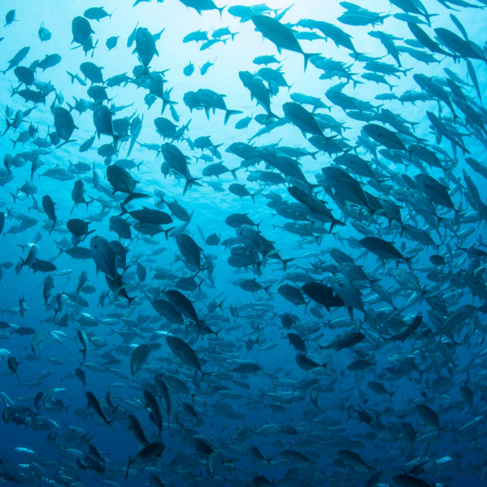

Protegendo os Oceanos, Protegendo o Futuro
A Importância da Sustentabilidade para a Saúde dos Nossos Mares
Os oceanos são essenciais para a vida na Terra, cobrindo 71% da superfície e sendo uma enorme fonte de oxigênio. No entanto, enfrentam sérios problemas de poluição por plásticos, lixo marinho e microplásticos, afetando os ecossistemas marinhos, a vida selvagem e a saúde humana. No Brasil, cerca de 325 mil toneladas de plástico são despejadas no oceano anualmente. É crucial tratar esse problema com cuidado, envolvendo a sociedade e promovendo a conscientização sobre a importância dos oceanos e práticas sustentáveis.
| Poluição por Plástico
O Impacto do Plástico nos Oceanos
Anualmente, milhões de toneladas de plástico são descartadas nos oceanos, prejudicando a vida marinha e os ecossistemas aquáticos. Entenda como pequenas ações podem fazer uma grande diferença na redução desse impacto.
| Lixo Marinho
Combate ao Lixo Marinho
O lixo marinho é um problema crescente que afeta não apenas os oceanos, mas também a saúde humana e a economia global. Conheça as iniciativas que estão sendo implementadas para reduzir o lixo marinho e como você pode contribuir para essa causa.
| Microplásticos
O Inimigo Invisível dos Oceanos
Partículas minúsculas que resultam da degradação de objetos plásticos maiores. Invisíveis a olho nu, eles representam uma ameaça significativa para a vida marinha e, eventualmente, para a saúde humana.
| Ecoturismo
A Importância de Ações Sustentáveis
O lixo marinho é um problema crescente que afeta não apenas os oceanos, mas também a saúde humana e a economia global. Conheça as iniciativas que estão sendo implementadas para reduzir o lixo marinho e como você pode contribuir para essa causa.